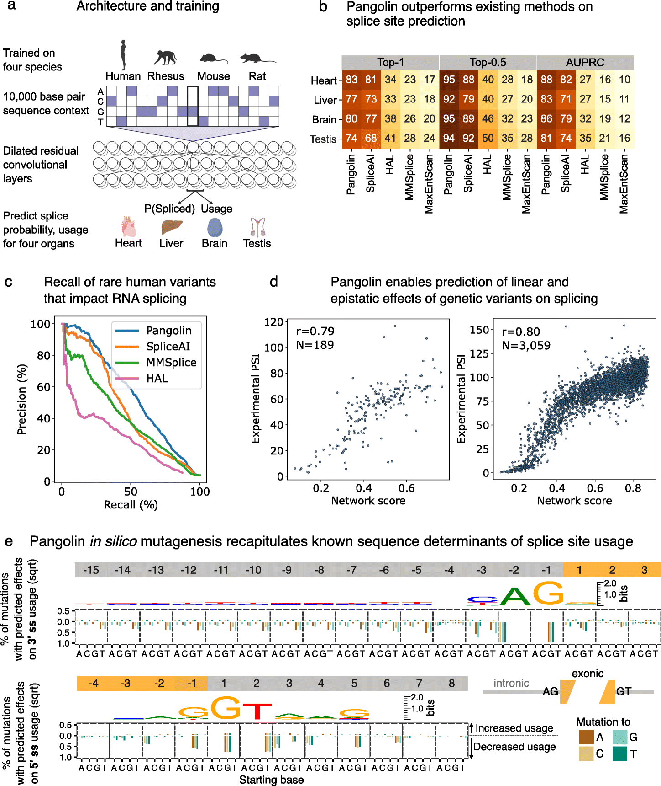
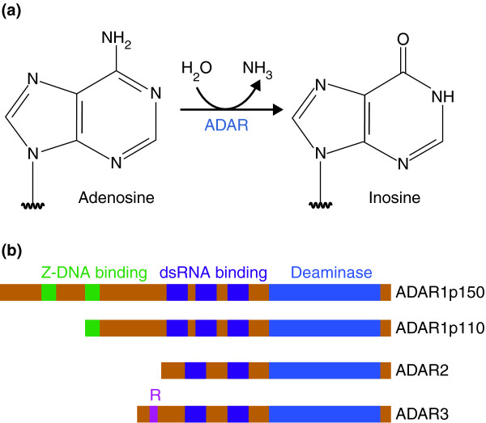

2023-04-14
ADSP Group Meeting at ICahn Institute
Knowles Lab and Raj Lab (Towfique Raj) works together on the Alzheimer’s Disease Sequencing Project (ADSP). Here are my notes on the in-person joint meeting.
Towfique / David. Review of aims
17k WGS, 40 cohorts, mix of ancestry. Find new genes, alleles, etc for AD.
- Functional genomics. xQTL (Gao Wang and Phil de Jager). Multi-omic functional assessment of novel AD variants using single-cell (Montine, Kundaje, Montgomery).
- AI / ML: neuro-imaging. Olivier Lichtarge - cognitive computing of AD genes and risk. Wein Pan - causal and integrative dep learning for AD genetics. Paul Thompson - mega-grant.
- Structural variant WG.
ReguloML
Apply deep learning techniques to predict and interpret the functional effects of AD variants, gene regulation, gene networks (RNA-Seq, ATAC-Seq, cell-type specific), trans-eQTL, prioritization of genes and pathways (finemapping?).
Chirag. Tutorial: Deep learning gene regulation
Training functional genomics models in PyTorch.
DL models predict functional genomic assays as a function of sequence. DNA -> Convolution Layers -> Dilated convolution layers -> Prediction.
Kelley et al, Genome Research, 2018.
For genomics, the goal is two-fold: (1) classification - predict called peaks for a particular assay, (2) regression - predict read counts of that assay.
Bias correction is important. read counts - assay bias. Basenji - GC bias. BPNet - bias correction model. How do this bias correction methods work?
Input format - one hot encoding of DNA sequence.
Output - generate bins of read counts for each functional genomics assay.
Create Dataloader - tiled matrix of DNA. Split data for training / validation / test.
Kailash. Big brain updates
Cell-type specific distal genetic regulation.
Goal: cis and trans eQTLs for a massive resource of uniformly processed RNA-Seq and genotype data (BigBrain) - expression, isoforms and splicing.
There are several cohorts and the team has calculated summary statistics for cis-eQTLs in most of them.
For one particular cohort, they found very few sQTLs. Is there someting wrong with the ROSMAP cohort? One potential source of error could be because ROSMAP samples are reverse-stranded.
They are planning to extend to trans-eQTLs.
Chirag asked about isoform TWAS.
Ariana. Overview of thesis aims
Impact of genetic variants on TF binding and chromatin in AD in cell-type specific ways.
GWAS identified 75+ AD associated genetic loci. Myeloid cells are important.
AD risk loci mediated by gene expression in microglia. MiGA (Microglia Genomic Atlas). Paiva Lopes, … Raj, Nat Genet.
caQTLs - chromatin accessibility.
bQTLs - TF binding QTLs, from novel pooled ChIP-Seq.
Harmonize bulk, sorted and single-cell/nuclei ATAC-seq datasets from neuronal and non-neuronal cells, enriching for myeloid cells, create chromatin accesibility profiles. About 1063 total donors bulk, 179 total donors in single nuclei.
How myeloid chromatin states compare to other cell types?
Geschwind lab - ATAC-seq bulk - fetal brains, PHNPC cell types, 92 donors - NPD
Monocytes are good proxy for microglia.
snMultiomics - RNA, ATAC. Also genotyped.
Karin. Probabilistic modeling of single-cell splicing
Evolutionary conservation of alternative splicing. Generally AS is quite species specific. Mazin et al, Nat Genet. 2021 showed three cassette exons in DLG3 that are highly conserved AS events in the brain. But, we know little about splicing conservation in single cells.
How well can we measure AS in single cell? Olivieri et al, eLife 2021, Hardwick et al, Nat Biotechnol, 2022
SPLiT-Seq with PolyDT + random hexamer primers provide better coverage than 10X genomics with polyDT primers.
ZooBrain: regulatory conservation across vertebrate brains. Satija group. How to define splicing events from RNA-Seq data?
Are junction counts zero inflated? 39% of junctions show zero-inflation under a global binomial model. Whereas only ~1% show zero inflation with individual binomial model.
Do PBMCs undergo differential splicing?
Karin is also looking at topic-modeling of single-cells.
Aline Real. BigBrain PCA and sQTLs
Assessing the effect of different variables on gene expression and define appropriate covariates for sQTL analysis.
splicing QTLs are variants that modify alternative splicing events. She is using 9 cohorts (n ~ 5.5k).
First 3 PCs of the gene expression explain more than 50% variation. She thinks that cohort and tissue types are the major driver of the variation. Needs to be accounted for in the sQTL analysis. She also checked for library preparation as a possible covariate, she checked for number of reads and sex as covariates.
Can we try using any unsupervised method for predicting the hidden covariates?
Identify a good approach to account for covariate effects while performing sQTL analysis.
Anjali. Deep learning for rare variants
Improving rare variant association tests using functional annotations.
She talked about Functional Score Test (FST). We expect the FST to capture the signature of functional annotation The FST does not appear to be capturing the difference between known AD genes and random genes. Also see my notes on her group meeting earlier this week.
Tatsuhiko. Deep learning splicing QTL in microglia
Why microglia? Involved in A\(\beta\) plaque formation.
The project aims to contruct prediction model. Training: Brain (microglia) RNA-Seq. Learn DL model and then predict.
Pangolin - improving multiple tissue prediction by combining different species. It is trained on 4 species, human rhesus, mouse and rat. 10,000 base pair sequence context, dilated residual convolution layers, and predict splice probability. Pangolin outperforms SpliceAI.

Tatsuhiko showed the pipeline for generating training and test data for Pangolin. Essentially, the idea is to find the splice sites and find association with reference genome. He will use microglia data from other species, published elsewhere recently. He discussed a detailed benchmarking plan for comparison of his new microglia data training with the origin training. The expectation is to improve accuracy with increasing sample size and species.
Winston. RNA editing
A-to-I RNA editing is abundant in the brain and implicated in disease.

BigBrain
n = 11801 (!)
Methods - RNA editing events called with Jacusa2. edQTL mapping with TensorQTL.
Meta-analysis drastically improves discovery revealing 21620 edQTLs in 5866 genes. But, he is observing many “singleton” sites, that is, associations observed in single cohorts. edSites occur in hyper-editing clusters.
Colocalization analysis.
edQTLs colocalize with Parkinson’s disease risk SNPs.
Beomjin Jang. Microglia TWAS / SingleBrain
Teresa Lin. Functional finemapping and PRS.
Pipeline using Wightman summary stat, QC, functional fine-mapping (PolyFun) and statistical fine-mapping (SuSiE), finally Polygenic Risk Score (Plink with clumping + p threshold).
Teresa is comparing the accuracy of finemapping by looking at the heritability enrichment obtained from the finemapped variants, as well as using PRS performance of the finemapped variants.
Question: Is the PRS score measured on separate test data?
Ashvin Ravi. Meta-myeloid
Meta-analysis of myeloid cell eQTLs.
Use the myeloid cells from the BigBrain project.
Many eQTLs colocalize with AD GWAS loci.
He wants to develop framework to understand enrichment for eQTL (and sQTL) data. - Approach 1: fine map and use results as continuous annotation, assess heritability via LD score regression. - Approach 2: run mediated expression score regression (MESC).